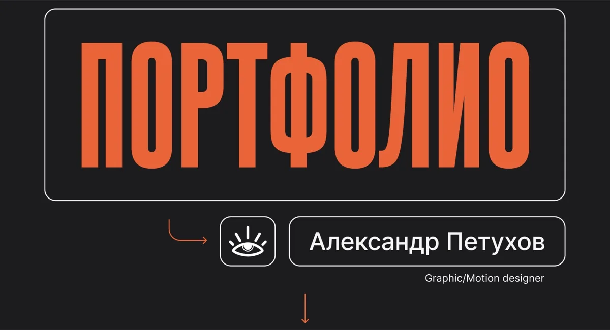
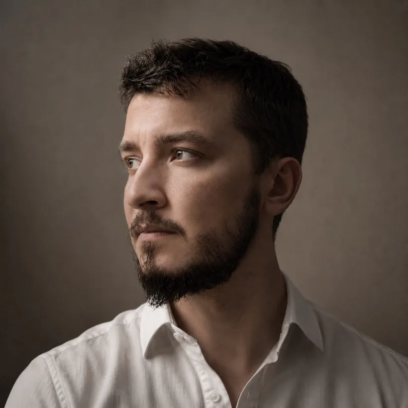
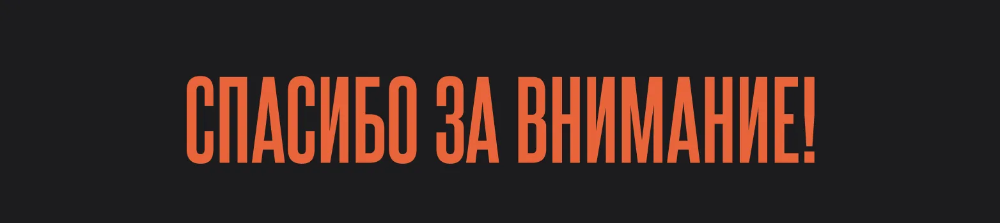

SHOWREEL
Я смонтировал шоурил, объединив в нём свои работы за прошедшие 11 месяцев.


Привет, меня зовут Александр 🙋
Я Graphic/Motion-дизайнер. В профессии более 5 лет.
Специализируюсь на дизайне социальных сетей.
В своей работе люблю использовать разные подходы к задаче.
Начиная от коллажной техники и заканчивая 3D-моушеном.
Моя суперсила — уникальный подход к рутинным задачам 🙌
Общий опыт работы 5+ лет.
Работаю с B2C и B2B-компаниями, беру проекты на фуллтайм и парт-тайм.
Моя работа — создавать красивый и понятный визуал для бизнеса.
Среди моих проектов: METRO, Avito (услуги ремонт/работа), Хаме, Vici, застройщик STAVNI, Bravolli, Nutridrink, Набеглави, Snow Green, провайдер Дом.ру, Black Star Burger, Demix, платформа Courson, One Price Coffee, Free dog.
Я смонтировал шоурил, объединив в нём свои работы за прошедшие 11 месяцев.
услуги, работа
Работал в связке с командой маркетинга Авито услуги ремонт/работа. Основная задача: поддержка креативных концепций для социальных сетей в рамках брендбука. В сумме было сделано более 100 креативов.
Дом.ру — федеральный телекоммуникационный оператор и ведущий российский провайдер
Работал с inhome-командой маркетинга Дом.ру. Основная задача: разработка креативных концепций для социальных сетей в рамках брендбука. Главное достижение: внедрение ИИ в креативы. В сумме было сделано более 170 постов.
В рамках работы с Deasign agency я создавал визуальный контент
(посты и сторис) для их собственных социальных сетей.
Моя задача заключалась в том, чтобы превратить портфолио
и экспертизу агентства в живые и вовлекающие форматы.
За год приложил руку к 12 крупным проектам.
Также принимал непосредственное участие в оформлении презентаций
для тендеров и исследований.
Snow Green — это популярная линейка экологичной и гипоаллергенной бытовой химии, созданная с применением корейских технологий.
Проект Snow Green мы реализовали в составе дизайн-команды Deasign Agency. Я обеспечивал регулярный выпуск статичного и анимационного контента для соцсетей.
Nutridrink — это специализированное высокобелковое и высококалорийное питание для взрослых, разработанное брендом Nutricia.
Для бренда лечебного питания Nutridrink мы с командой агентства разработали визуальное оформление социальных сетей. Я отвечал за адаптацию фирменного стиля под форматы соцсетей: создавал шаблоны для постов и сторис, подбирал визуальные решения, которые транслируют заботу, надёжность и экспертизу бренда в области восстановительного питания.
Природная лечебно-столовая вода родом из Грузии.
Продукт выходил на рынок России. Для этого мы с командой придумали уникальное визуальное решение согласно брендбуку клиента. Оно подчёркивало уникальность продукта и помогло отстроиться от конкурентов.
Моя роль заключалась в обеспечении бесперебойного выхода качественного контента в социальных сетях строго по утверждённому контент-плану.
За каждым проектом в этом портфолио стоит системный подход: анализ ниши, работа в команде, строгий контроль качества и постоянный поиск визуальных решений, которые работают на отстройку от конкурентов.
Я не копирую чужие решения. Для каждого бренда ищу свой визуальный язык, который помогает выделиться и запомниться.
Каждый элемент в моих креативах работает на конкретную задачу.
